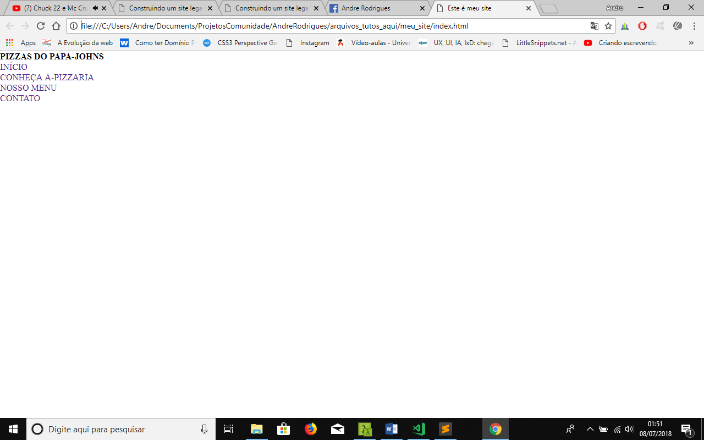

Construindo um site legal só com CSS e HTML (Parte-2)
Já trabalhamos em nosso reset onde temos algumas regras globais. Vamos agora estilizar o nosso navbar. Vendo a imagem abaixo podemos notar que nosso menu não está nos transmitindo uma cara boa não é?! Então vamos arruma-lo.
Trabalhando em nosso navbar
Para deixar nosso menu com uma cara melhor iremos adicionar as seguintes regras globais:
.navbar{
background-color: #fff;
box-shadow: 1px 1px 3px 1px rgba(51, 51, 51, 0.2588235294117647);
padding: 0.5em;
position: fixed;
width: 100%;
}
.navbar .logo h1, .navbar .links li> a{font-family: Arial, Helvetica, sans-serif;}
.navbar .logo{
margin-left: 1em;
padding: 0.2em 0 0 0;
width: 40%;
}
.navbar .logo h1{
color: #8bc34a;
font-size: 2em;
font-weight: bold;
text-transform: uppercase;
}
.navbar .links li{padding: 0.8em 0.3em;}
.navbar .links li> a{
color: #333;
font-weight: 700;
}
As regras globais acima são isoladas apenas apenas para nosso componente navbar, calma não fique confuso irei explicar sobre essa regra a parte. Está regra é chamada global pois pode ser aplicada tanta na versão desktop e mobile. todos nossos componentes terão regras globais. E a segunda dica é: deixe sempre as configurações globais em primeiro lugar e em seguida as configurações isoladas isto é de cada filho do componente. E por falar em responsividade vamos agora agora aplicar algumas regras para telas mobile e desktop.
/*Parte mobile*/
.navbar .button-responsive{
display: block;
width: 20%;
}
.navbar .links{display: none;}
/*Configuração telas 768px acima..*/
@media(min-width: 48em){
.navbar{flex-direction: row;}
.navbar .logo{
margin-left: 1em;
width: 40%;
}
.navbar .logo h1{font-size: 2em;}
.navbar .button-responsive{display: none;}
.navbar .links{
position: absolute;
right: 1em;
width: 38%;
}
.navbar .links li{display: inline-block;}
}
Com as regras acima aplicadas já podemos notar que nosso menu já tem uma aparência melhor e também já tem um bom comportamento em relação a responsividade. E aí tá gostando dos resultados? Agora vamos fazer a mágica de nosso menu responsivo acontecer, isso mesmo! Agora iremos criar nosso primeiro efeito, e o bacana desse efeito que iremos fazer é que ele será com uma ação feita com puro css. Este efeito é muito comum usar toggle para revelar os links, mas como estamos brincando com CSS em um nível avançado, então iremos usar o target para efetuar a ação idêntica ao toggle, mas antes de fazermos está ação vamos deixar noss botão responsivo com uma carinha legal. Segue o código do menu:
BAIXE A PRIMEIRA PARTE DO PROJETO
CONTINUE LENDO NA PARTE 2